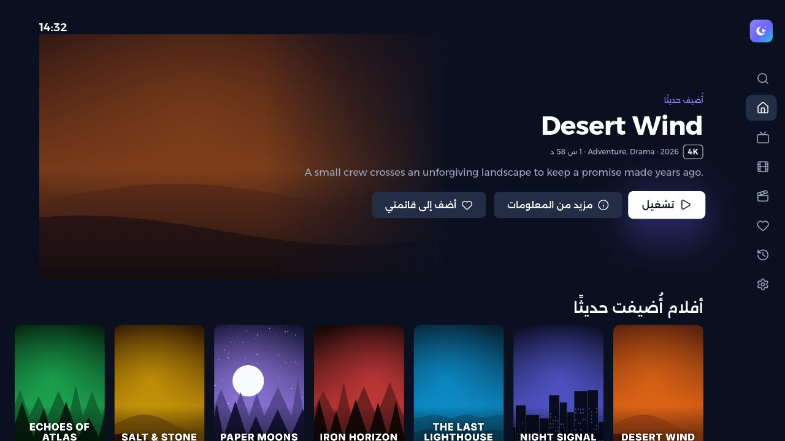
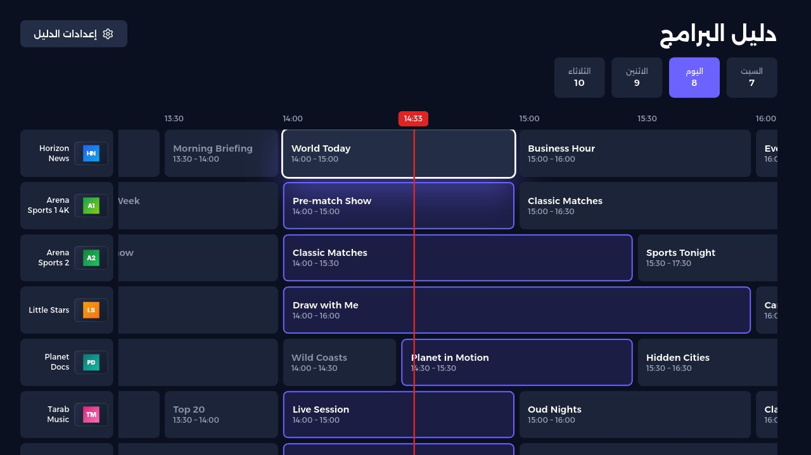
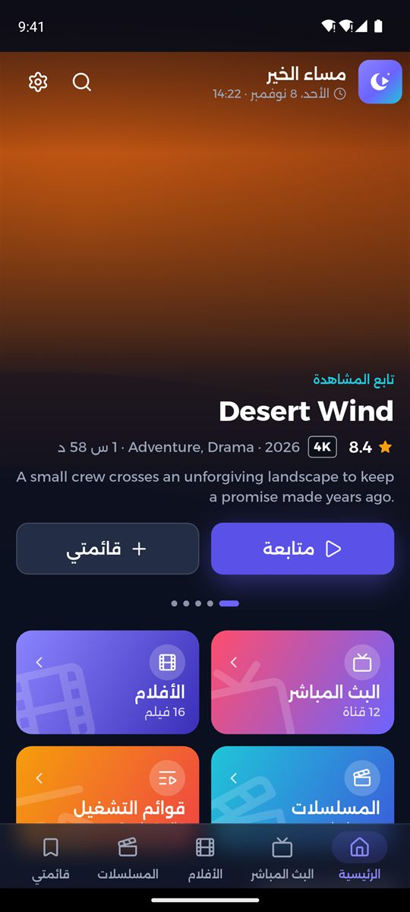
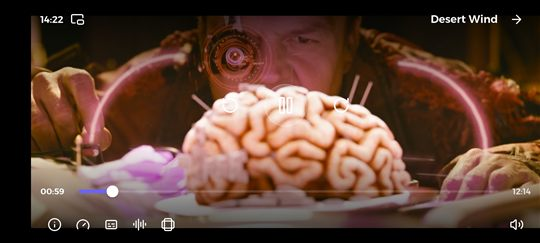

أضف قائمتك الخاصة
أضف حساب Xtream Codes أو رابط M3U أو ملف M3U من مزوّدك لتحصل على مكتبة بأسلوب السينما: بث مباشر وأفلام ومسلسلات مع الملصقات والمواسم ومتابعة المشاهدة.
مشغّل سريع وخاص لقوائم IPTV الخاصة بك.
لهواتف أندرويد وأجهزته اللوحية، ولأجهزة Android TV و Google TV، بالعربية والإنجليزية.




أضف حساب Xtream Codes أو رابط M3U أو ملف M3U من مزوّدك لتحصل على مكتبة بأسلوب السينما: بث مباشر وأفلام ومسلسلات مع الملصقات والمواسم ومتابعة المشاهدة.
دليل تلفزيوني كامل بما يُعرض الآن وتاليًا، وجدول اليوم لكل قناة، والمشاهدة الاستدراكية حيث يدعمها مزوّدك.
تركيز واضح، وأزرار الأرقام للانتقال إلى قناة، وزر الدليل، ولوحة مفاتيح على الشاشة تعمل مع جهاز التحكم.
Chromecast من هاتفك، وصورة داخل صورة، واستئناف المشاهدة من حيث توقفت في كل عنوان.
بدون عنوان MAC، وبدون تفعيل عبر موقع، وبدون رموز أجهزة. ثبّت التطبيق وأضف قائمتك.
تبقى قوائمك وبيانات الدخول وسجل المشاهدة على جهازك. بدون إعلانات أو تتبّع أو تحليلات.
SAHRA Player مشغّل وسائط فقط، ولا يقدّم أي قنوات أو محتوى.
للأسئلة أو المشكلات: ahmedemad2210@gmail.com